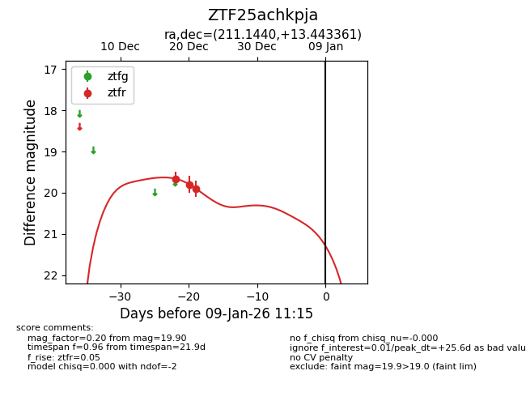
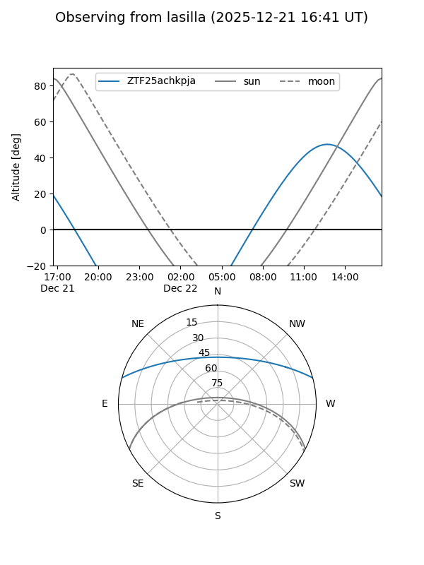
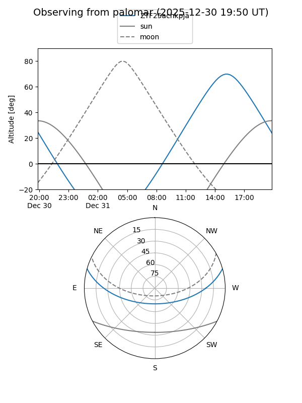

ZTF25achkpja
Target ZTF25achkpja at 2026-01-09 12:49
Aliases and brokers:
FINK: link
Lasair: link
ALeRCE: link
alt names
ZTF25achkpja (ztf,fink_ztf)
Coordinates:
equatorial (ra, dec) = 211.1440,+13.44336
equatorial (HMS+DMS) = 14:04:34.56,+13:26:36.10
galactic (l, b) = (357.8653,+68.11094)
Flags:
Photometry:
last ztfr=19.90
3 ztfr detections
Lightcurve

Visibility


Additional plots